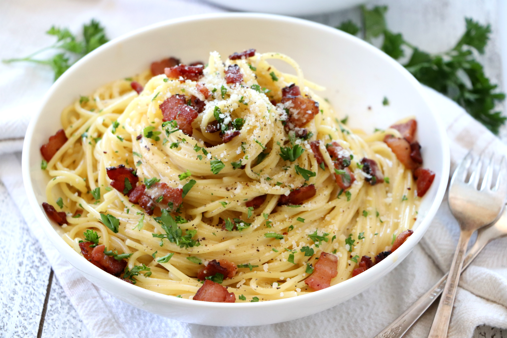

Carbonara

Image Source
Description
Pasta alla Carbonara is a traditional Italian dish we Americans have pretty much
perverted with all kinds of crazy stuff. We do that sometimes. But today, we're
going to stick very pretty close to the authentic Italian version of this amazing
and surprisingly simple pasta. Ready to rock? Let's roll.
Source
Ingredients
- 1lb linguine pasta
- 4 eggs
- 1 pound bacon or pancetta
- 1 1/2 cups Parmesan cheese
- 8-12 cloves of garlic
- 1 large onion
- 1 cup chicken stock
- 1 cup white wine (or substitute another cup of stock)
- 1/2 stick of butter
- 1 handful of parsley
- 1-2 tablespoons black pepper
Directions
- First, slice up 1 pound of bacon into pieces about one inch wide. These will become
bacon bits, which I believe to be the magical fairy dust of the food world.
- Once they're sliced, just toss your bacon pieces into a stainless steel pan.
Non-stick will work fine too, but stainless will help us achieve more depth of
flavor later on. So lets get that bacon browning.
- While the bacon's cooking, set a pot of salted water (I use about 2 tbsp. salt for
a gallon of water) on the stove for our pasta. Next, we need to chop our onion.
- Keep an eye on that bacon, as it would be a terrible tragedy to burn it. Burned
bacon is not tasty. Once the desired bacon bliss has been achieved, just scoop it
out with a slotted spoon and set it onto a plate. And don't dump the
grease!...er...uh...I mean...uh..."the renderings." Yeah, dont dump out the
renderings. We still need that stuff.
- Okay, now that we've spooned out all of our bacon, we can throw the diced onions
into the bacon grease.
- Give the onions a quick stir and let them cook down over a medium-high heat for
a couple of minutes. In the meantime, we can slice up our garlic.
- I like to slice the garlic in thin sheets for this recipe instead of mincing it.
I dont know why, I just do.
- After the onions have cooked for a couple of minutes, throw in the garlic. Yes,
all of it! Adding it after the onions have cooked a little will prevent the garlic
from burning. Garlic burns up a little faster than the onions.
- If your water is boiling by now, go ahead and add in your pasta. I''m using
linguine. It should take about 9-10 minutes.
- After the onion and garlic have cooked for another couple of minutes, they should
be removed from the pan with our slotted spoon, leaving the
grease...um...renderings behind.
- Okay: NOW'S THE TIME TO DISCARD THE BACON GREASE. Once we've gotten rid of that
grease, we should be left with a pan that looks a little greasy, with all the
nice brownness still stuck to the bottom of the pan. Place the pan back on high
heat until it starts to smoke a little.
- As soon as the pan begins to smoke, pour in your white wine (or chicken stock if
you're not into the whole wine scene.) If you're cooking on a gas range, you may
want to remove the pan from the flame when you pour in the wine, as it can
sometimes ignite.
- Using a whisk, fork, spatula, or wooden spoon, you'll want to scrape the bottom of
the pan vigorously until the little bits of flavor have released themselves into
the liquid. Voila! You've just deglazed a pan!
- After scraping, I'll add in my 1 cup of chicken stock.
- Then I'll return my bacon, onion, and garlic to the sauce I've just created.
- Now we'll stir it all together and let it simmer over medium heat.
- Allowing the hot part of our sauce to simmer, we're now going to crack those four
eggs into a large bowl. The bowl needs to be large enough to hold all the pasta
and other ingredients, and still leave room to stir together.
- Add most of the Parmesan (leave out a little bit for a topper) and rough chop the
parsley, adding it to the eggs as well. Leave out a little extra parsley for
garnishing.
- Mix it all up.
- Now drain off the water from your steaming hot pasta.
- And add the hot pasta to the egg/parmesan/parsley mixture. It's important that
the pasta be very hot, because this is what cause the eggs to thicken.
- The final "layer," the bacon, goes on top of the pasta.
- And I'm sorry, but right before we mix the pasta, we need to add...gulp...1/2 stick butter.
- Now MIX! Tongs work great for this.
- Get everything all worked together, and be sure to add in lots of black pepper.
Combine everything...and that's it! It's time for us to serve it up. Toss on a
little bit more cheese and parsley and you've got a beautiful Italian classic.
<-Back